Magellan's Cross
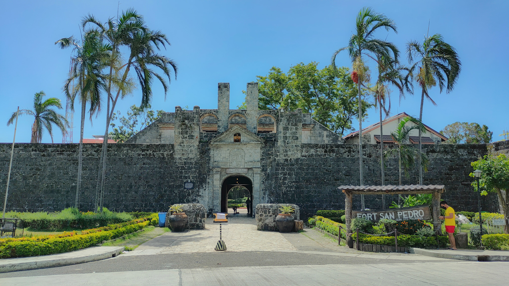
Fort San Pedro
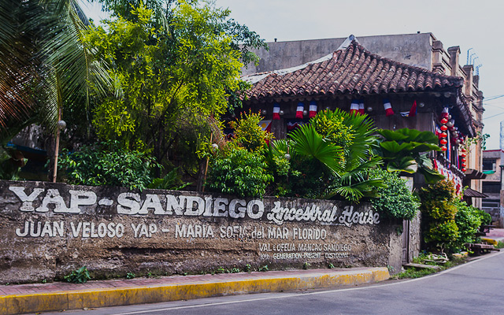
Yap-San Diego Ancestral House

Plaza Independencia
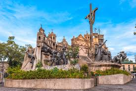
Heritage of Cebu Monument
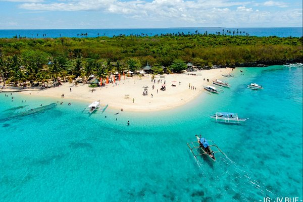
Bantayan Island
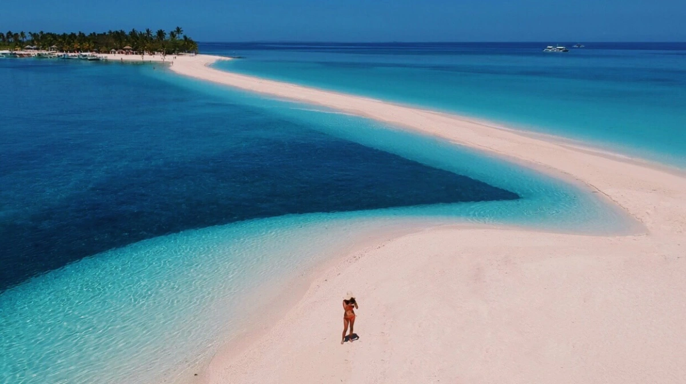
Malapascua Island

Sumilon Island
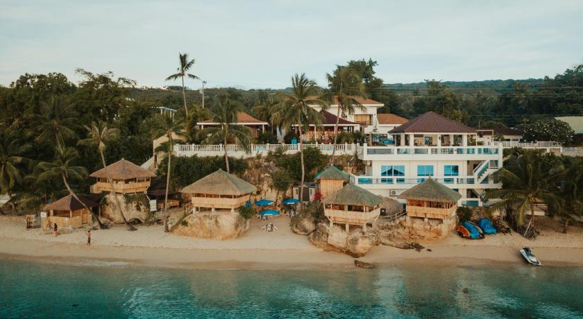
Tingko Beach
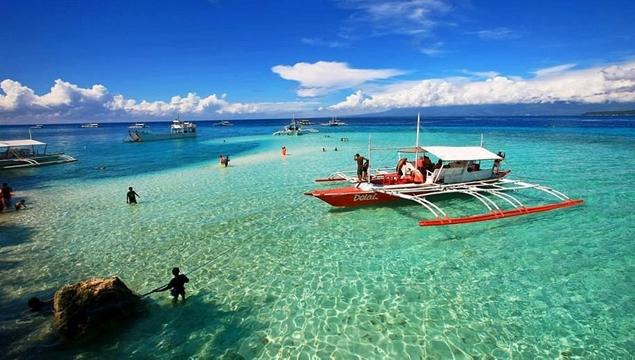
Olango Island
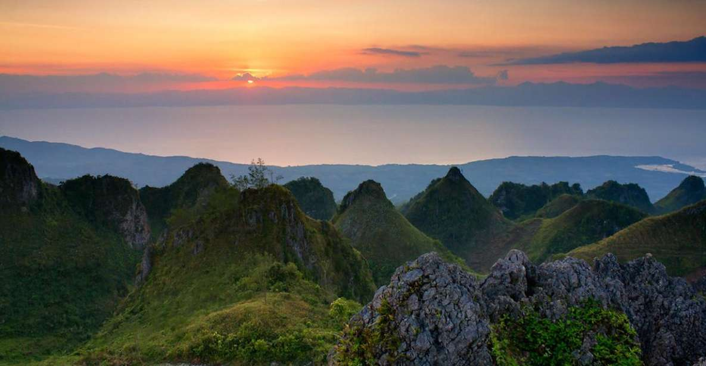
Osmeña Peak

Kawasan Falls Canyoneering
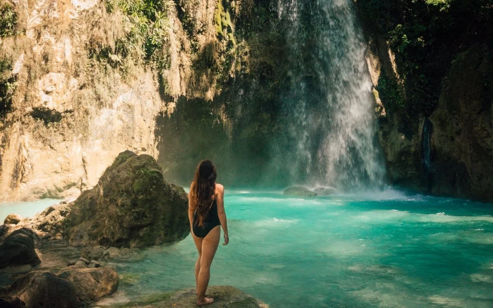
Inambakan Falls
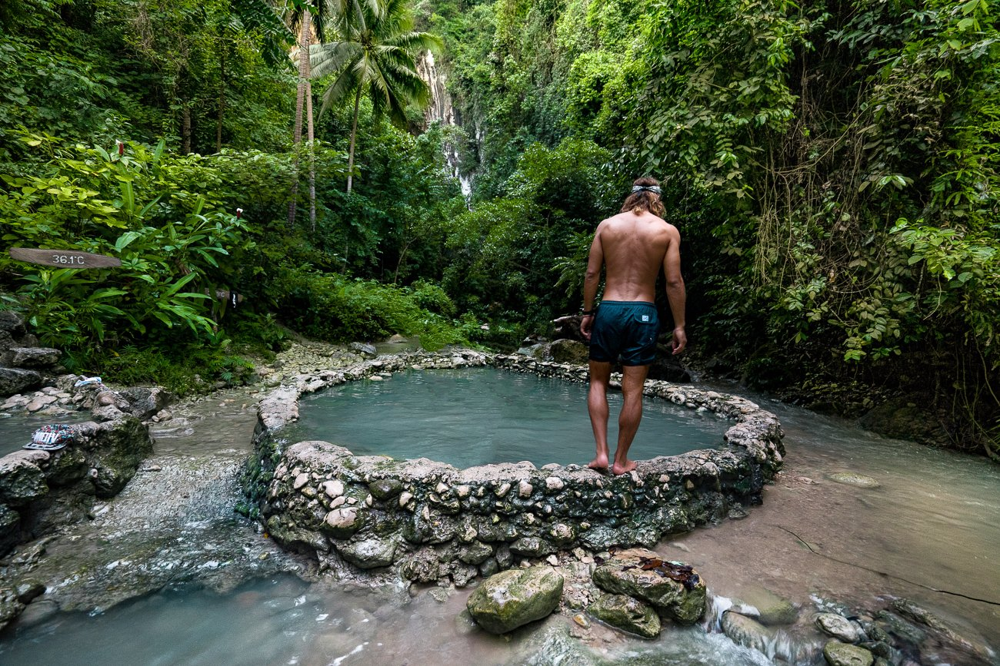
Mainit Hot Spring
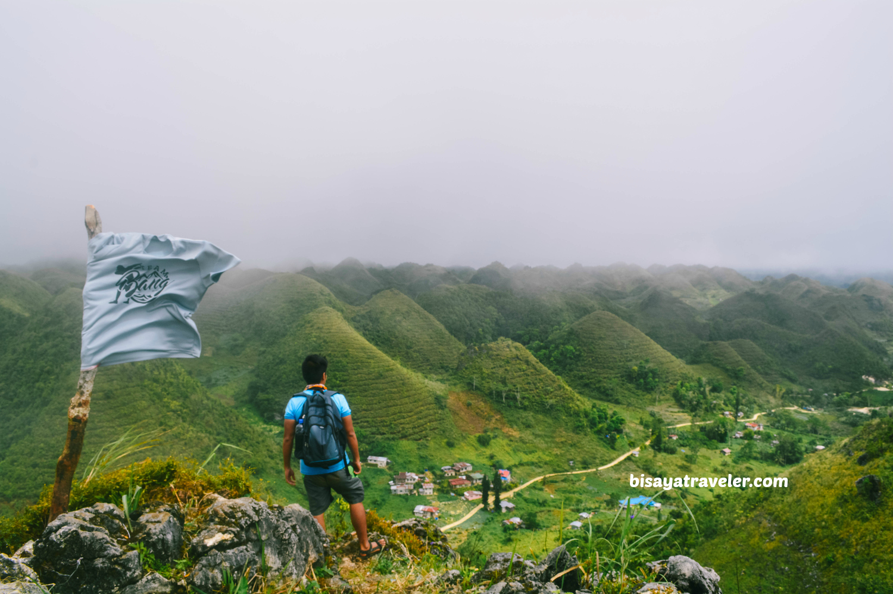
Casino Peak Trek

Sto. Nino

Cebu Taoist Temple
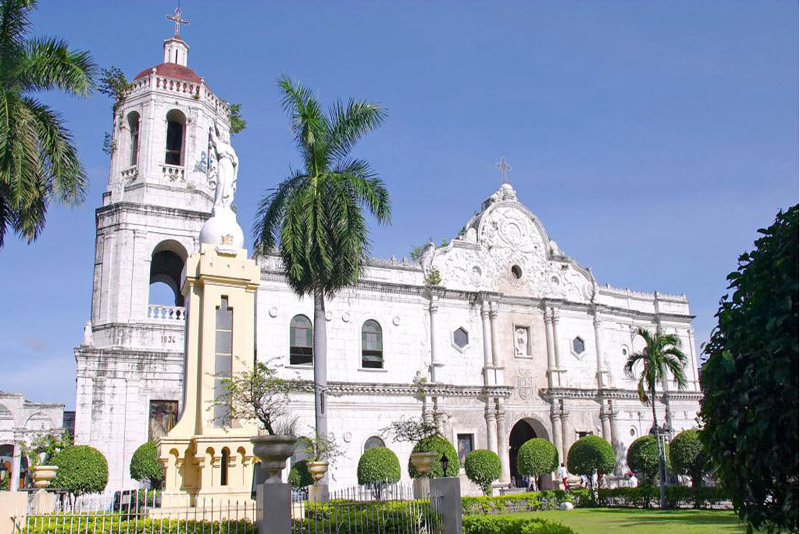
Cebu Metropolitan Cathedral
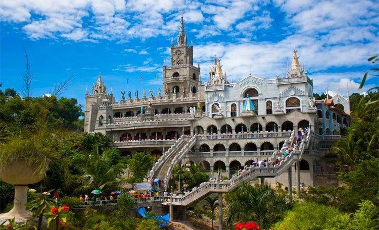
Simala Shrine
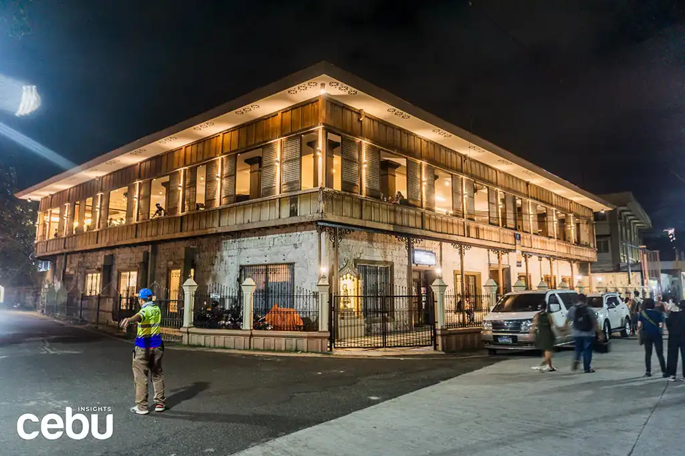
Archdiocesan Museum of Cebu
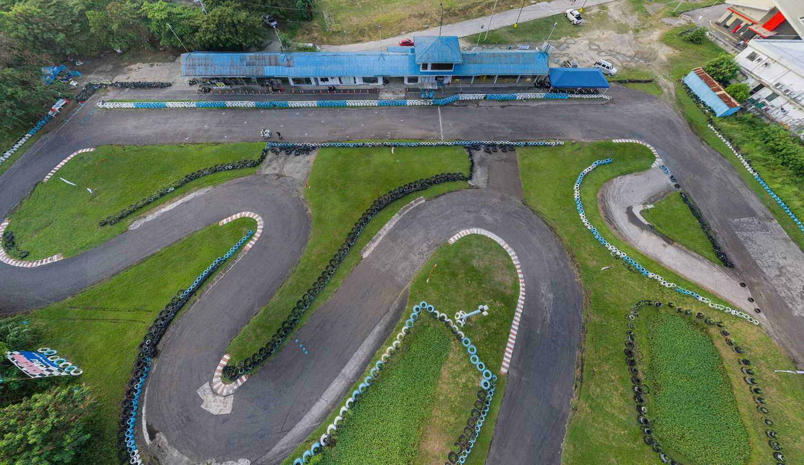
Kartzone

Nustar Mall
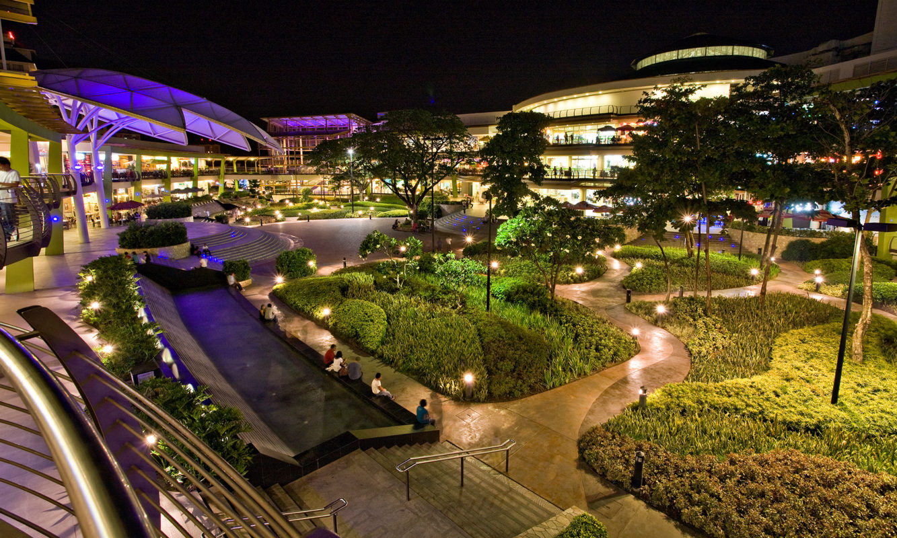
Ayala Center Cebu Cinemas

Cebu Ocean Park

Music One Family KTV

Basilica Minore del Santo Niño de Cebu

Sirao Flower Farm
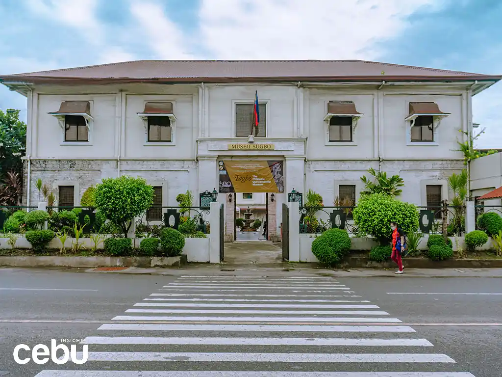
Museo Sugbo

Temple of Leah

Casa Gorordo
Discover Cebu's tourist spots and attractions
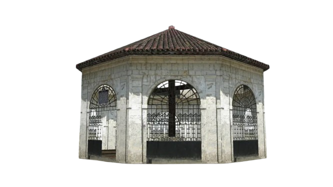
About
Cebu Tourist Spot Recommender System is a web application that provides recommendations on tourist spots in Cebu based on user ratings. Users can rate different categories of tourist spots such as historical sites, beaches and islands, adventure and nature, religious sites, urban and entertainment, and cultural and local experiences. The system will then recommend tourist spots based on the user's ratings. This system uses User-Based Collaborative Filtering to provide recommendations.
Learn More